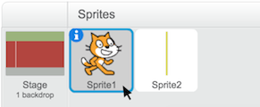

Se você alcançar a reta final
Clique para destacar o gato.

Clique na guia de Scripts.
Clique na categoria Controle e arraste um bloco se.
Encaixe-o em seu script:

Depois, clique na categoria Sensores e arraste um bloco tocando. Encaixe-o no bloco se assim:

Selecione o Sprite2 (o nome da linha de chegada) do menu suspenso.
Agora, faça algo acontecer quando seu gato cruzar a linha de chegada!
Clique na categoria Aparência e arraste um bloco diga.
Então, digite o que você quer que o gato diga.

Experimente! Faça o seu gato correr até a linha de chegada.
Agora, vá até o ponto de partida